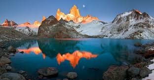
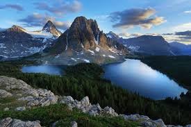
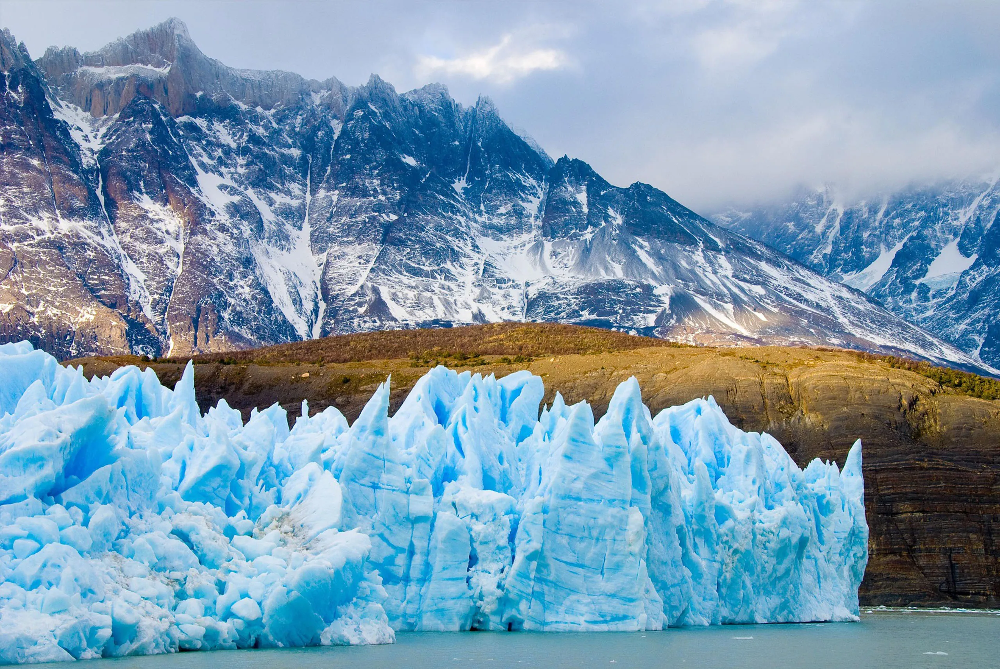

Imgenes de la Patagonia



La Patagonia Argentina es una de las regiones más fascinantes y diversas del mundo, una vasta extensión que abarca el sur del país, con una geografía que varía desde imponentes montañas hasta desiertos áridos, pasando por bosques frondosos y lagos cristalinos. Esta zona, famosa por su belleza natural, ofrece paisajes que parecen sacados de un sueño: montañas nevadas, glaciares en movimiento, vastas estepas y costas salvajes bañadas por el océano Atlántico.
En el corazón de la Patagonia, encontramos el Parque Nacional Los Glaciares, hogar del famoso glaciar Perito Moreno, uno de los pocos glaciares en el mundo que sigue avanzando. En la región andina, las ciudades como El Calafate y El Chaltén se han convertido en puntos de encuentro para los amantes del trekking y la aventura, quienes se enfrentan a desafiantes rutas que llevan a panorámicas vistas de montañas como el Fitz Roy y el Cerro Torre.
Más al sur, la Península Valdés, un sitio declarado Patrimonio de la Humanidad, atrae a miles de turistas cada año con su increíble biodiversidad. Aquí, es posible avistar ballenas, pingüinos, lobos marinos y una variada fauna que habita en sus costas. Además, la región está salpicada de pequeños pueblos rurales, como Ushuaia, la ciudad más austral del mundo, que ofrece una experiencia única de contacto directo con la naturaleza en su estado más puro.
La Patagonia Argentina también es un territorio de historia y cultura. A lo largo de los siglos, ha sido habitada por pueblos originarios como los mapuches, tehuelches y selk'nam, quienes han dejado un legado cultural profundo en la región. Además, la historia reciente está marcada por la presencia de exploradores europeos y la colonización, lo que ha contribuido a que la Patagonia sea una mezcla de tradiciones autóctonas y europeas.
El clima de la Patagonia es un factor importante que caracteriza la vida en esta región. El viento, la nieve y las bajas temperaturas hacen que la vida cotidiana sea un desafío, pero también ofrecen un ambiente de tranquilidad y soledad que atrae a quienes buscan escapar del bullicio de las grandes ciudades.
En resumen, la Patagonia Argentina es un territorio de contrastes, donde la naturaleza se presenta en su forma más espectacular y desafiante. Es un lugar que invita a la reflexión, a la aventura y, sobre todo, a la admiración por su belleza salvaje e intacta.